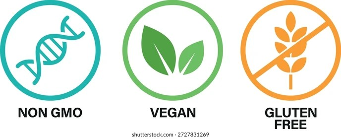

When I first started baking for friends with dietary restrictions, I thought I could just swap ingredients one-for-one and call it a day. Gluten-free flour instead of regular flour. Flax eggs instead of real eggs. Maple syrup instead of sugar. I was so wrong. The first gluten-free cake I made was so dry it cracked when I touched it. The first vegan cookies I made spread into pancakes. The first sugar-free brownies I made tasted like cardboard with a side of regret.
I learned that dietary restriction baking is a whole different skill set. And when you add scaling to the mix, it gets even harder. But after years of trial and error, I've developed eight rules that help me scale dietary restriction recipes without losing my mind.
Rule number one is to never scale a substitution for the first time. Make the original substitution at 1x first. See if it works. Does the gluten-free cake taste good? Does the vegan cookie hold together? Does the sugar-free brownie have the right texture? If the substitution fails at 1x, it will definitely fail at 4x. Fix it at small scale first. Then scale.
I violated this rule once. I found a recipe for gluten-free banana bread that looked promising. Instead of making it as written, I scaled it to 3x right away because I was baking for a large event. The bread came out gummy and dense. I had wasted 6 cups of expensive gluten-free flour. If I had made a 1x test batch first, I would have seen that the recipe needed more liquid. I would have fixed it at small scale, then scaled. Now I never skip the test.
Rule number two is that gluten-free flours need 10 to 15 percent more liquid than wheat flour. This is not optional. Gluten-free flour blends absorb more moisture because they don't have gluten to hold structure. If you scale a wheat-based recipe to gluten-free, you must add extra liquid. The percentage stays the same at any scale. If you add 15% more liquid at 1x, you add 15% more at 5x. Just multiply your liquid by 1.15.
I learned this from a failed batch of gluten-free pizza dough. The dough was so dry it wouldn't stretch. I added water little by little until it came together. I ended up adding about 15% more water than the recipe called for. Now I just add that from the beginning.
Rule number three is that xanthan gum does not scale linearly. Xanthan gum is a binder that replaces gluten. At small scale, 1/4 teaspoon per cup of flour works. At large scale, you need less. The exponent is about 0.7. For a 4x recipe, you need about 2.6x the xanthan gum, not 4x. For a 10x recipe, you need about 5x, not 10x. Too much xanthan gum makes your baked goods gummy and unpleasant.
I made this mistake with a gluten-free chocolate cake. The 1x version was perfect. I scaled it to 6x and used 6x the xanthan gum. The cake was stretchy, like a fruit roll-up. My kids thought it was hilarious. I thought it was a waste of chocolate.
Rule number four is that flax eggs and chia eggs work well at small scale but fail at large scale. Flax eggs are made by mixing one tablespoon of ground flaxseed with three tablespoons of water. They work great for binding in cookies and muffins. But when you scale to 5x or higher, the gel becomes too thick and the structure weakens. For large scale vegan baking, switch to a commercial egg replacer like Bob's Red Mill or Follow Your Heart. These powders are designed to scale linearly.
I once made a 6x batch of vegan chocolate chip cookies using flax eggs. The cookies were flat and greasy. The flax gel added too much liquid and not enough structure. I switched to a commercial replacer for the next batch and the cookies were perfect.
Rule number five is that low-sodium scaling requires the 0.85 exponent, but with a reduced baseline. If you've already reduced the salt in your recipe by 25%, that's your new baseline. When you scale, apply the exponent to that reduced amount. For a 4x scale, you don't use 4x the reduced salt. You use 3.2x the reduced salt. This keeps the salt perception consistent.
I messed this up with a low-sodium soup. I had reduced the salt from 10 grams to 7.5 grams for the 1x version. Then I scaled to 8x and used 8 times 7.5, which is 60 grams. The correct amount was 7.5 times 8^0.85, which is about 7.5 times 5.8 equals 43.5 grams. I oversalted by almost 40%. The soup was undrinkable.
Rule number six is that sugar substitutes have different volumes and sweetness levels. Erythritol is 1:1 by volume but only 70% as sweet. Allulose is 1:1 by volume and 70% as sweet, but it browns like sugar. Stevia is 200 times sweeter than sugar, so you use tiny amounts and need to add bulk. Monk fruit blended with erythritol is 1:1 by volume and sweetness. When you scale these, the volume adjustments scale linearly, but the sweetness adjustments do not. Always taste your batter before scaling further.
I tried to scale a sugar-free cake using erythritol. At 1x, the cake was slightly less sweet but acceptable. At 4x, the cake had a weird cooling aftertaste because the erythritol concentration was higher. I had to reduce the erythritol by about 15% and add a small amount of stevia to boost the sweetness. Now I test at 2x before going to 4x.
Rule number seven is that dairy-free milk substitutes have different fat contents and protein structures. Almond milk is thin and low in fat. Oat milk is creamier. Soy milk has protein that behaves like dairy. Coconut milk is high in fat. When you scale a recipe, these differences are magnified. A cake made with almond milk at 1x might be fine. The same cake made with almond milk at 4x might be dry because the almond milk didn't provide enough richness. I prefer oat milk for scaling because it's consistent.
I learned this from a vegan birthday cake. The 1x version used almond milk and was delicious. I scaled to 3x using the same almond milk. The cake was dry and crumbly. I realized that almond milk has almost no fat, and at larger scale, the lack of fat became noticeable. I switched to oat milk for the next batch and the cake was moist again.
Rule number eight is to document everything. When you find a dietary substitution that works at 1x, write it down. When you scale it to 2x and it still works, write that down. When you scale to 4x and it fails, write down why. This notebook will become your most valuable resource. I have pages and pages of notes on gluten-free flour blends, vegan egg replacers, sugar substitutes, and low-sodium adjustments.
My notebook entry for gluten-free pizza dough says: "King Arthur measure for measure flour, add 12% more water, xanthan gum at 0.7 exponent, bake at 425 for 12 minutes at 1x, at 4x bake in two pans for 14 minutes each." That note has saved me from repeating my mistakes dozens of times.
I built a tool that helps with the math for all eight rules.
My friends with celiac disease and dairy allergies and vegan diets have been so patient with me. They've eaten my failures and given me honest feedback. They've celebrated my successes. They've sent me photos of my gluten-free birthday cakes at their parties. Those photos make all the failed batches worth it.
If you're just starting with dietary restriction baking, pick one restriction and one recipe. Make it at 1x. Adjust until it's good. Then scale to 2x. Then to 4x. Take notes. Be patient. You'll get there.
— Olivia
P.S. My vegan friend told me last week that my chocolate cake is better than any non-vegan cake she's ever had. I'm pretty sure she was just being nice, but I'm keeping that compliment forever.